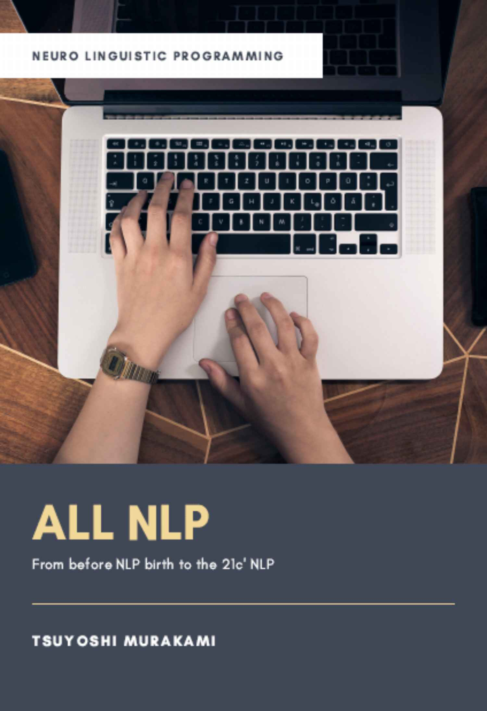
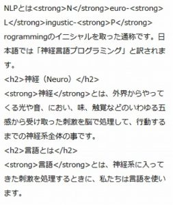
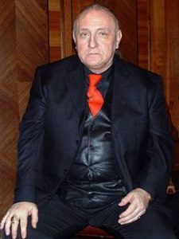
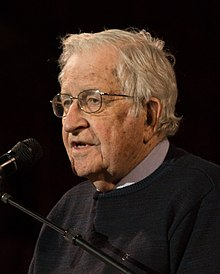

| ALL NLP: NLP誕生前夜から21世紀のNLPまで | |
| 村上 剛 | |
| (2019) | |

NLPとは？
NLPとは N euro- L ingustic- P rogrammingのイニシャルを取った通称です。日本語では「神経言語プログラミング」と訳されます。
神経（Neuro）
神経 とは、外界からやってくる光や音、におい、味、触覚などのいわゆる五感から受け取った刺激を脳で処理して、行動するまでの神経系全体の事です。
言語とは
言語 とは、神経系に入ってきた刺激を処理するときに、私たちは言語を使います。
コンピュータで言えば、このページをつくっているコンピュータ言語は以下のようなものです。

私たちの脳もコンピュータのように言語によって脳の中で情報処理が行われています。
プログラミング
神経と言語で処理された情報を基にして、行動したり、行動しなかったり、話したり、黙ったりあるいは汗をかいたり、涙を流したり、このような行動や反応が起こるようにプログラミングされています。
NLPで解決できること
今すぐ解決したい問題
人間関係の改善
家族関係、夫婦、親子、兄弟、パートナー、親戚などの身近な人間関係はこじれると解決するのが難しく、そして問題として言い出せない難しい関係でもあります。
会社や職場での人間関係もまた、難しい関係です。特に利害関係が絡むケースが多いので、パワハラ、セクハラなど、上長が部下を攻撃するケース。反対に部下が上長の指示に従わず、業務に支障を来すケース。同僚からの嫌がらせなど。
依存症
タバコ、過剰飲酒、上述の人間関係もまた依存症になり得ます
葛藤
眠りたいのに目が覚めてしまう、勉強したいのについテレビを見てしまう、子供に優しくしたいのについ怒鳴ってしまう。
「本当は○○したい」VS「つい～～してしまう」
過去の未完了を解決する
過去のトラウマを解消する
なぜか、わからないけど母と似たような人を見ると、怖くなってしまう。
学生の頃に、運動していた時に痛めたぎっくり腰が今も起こりそうで怖い。
刷り込みを解消する
子供の頃に刷り込まれた「自分を否定する」信念
親によって刷り込まれた「お前は無能だ」という信念
未来への不安
リストラされるかもしれないという不安
離婚されるかもしれないという不安
試験に落ちるという不安
NLPの代表的テクニック
メタモデル、ミルトンモデル
質問や言語の使い方によって、クライアントの望ましい状態の達成をサポートします
アンカリング、ステートマネジメント
ある特定の場面における身体と心の状態（ステート）と呼びます。
ステートをアウトカムへ適切化することがステートマネジメントです。
ステートマネジメントのために、ある刺激で一定のステートを引き出す反応プロセス構築をアンカリングと呼びます
船の係留のための錨（アンカー）に由来します
表象システム、ストラテジー、サブモダリティ
私たちは、大きく分けて視覚、聴覚、体感覚の3つの感覚のうちどれかを優位に使いながら、脳内に表象を構築します。
その表象構築のパターンを表象システム（または代表システム）と呼びます。
表象システムをアウトカムに向けて適切に順序だてることを「ストラテジー・戦略」と言います
また感覚を詳細な情報、例えば視覚は明るさ⇔暗さ、カラー⇔白黒などを「サブモダリティ」と呼ばれます
タイムライン、知覚位置、ニューロロジカルレベル
時間の認識を二次元で床上に配置するラインを「タイムライン」と言います。
私たちは、出来事を知覚する時に基本的に3つの位置があります。「私」「あなた」「彼ら」の3つで、それぞれ第1、第2、第3ポジションと区別化されます
20世紀の知の巨人と呼ばれたグレゴリー・ベイトソンの学習とコミュニケーションのレベルに神経生理学を組み合わせ、環境レベル、行動レベル、能力レベル、信念・価値観レベル、アイデンティティレベル、スピリチュアルレベルがあります。
フィールド
物理的な肉体の皮膚に対して、それを取り囲むエネルギー的な皮膚を「セカンドスキン」と呼び、身体と心とエネルギー的に自己を守るテクニックです。
人を援助するために適切な下記の5つの要素で構成されたステートです。
1)Cセンタリング
2)Oオープン
3)Aアウェイクニング
4)Cコネクティング
5)Hホールディング
NLPの歴史
始まりは、実験から
1970年代初頭、アメリカのカリフォルニア大学サンタクルーズ校において、始まりました。
＜カリフォルニア大学サンタクルーズ校のカフェにて著者＞
当時、数学とコンピューターのフェローシップの研究生だったリチャード・バンドラーが、ゲシュタルトセラピーのビデオ編集を出版社から依頼され、何本ものゲシュタルトセラピーの創始者であるフリッツ・パールズのビデオを見ているうちに自分でもできそうな気がして、サンタクルーズ校の大学生を集めて、実験的にゲシュタルトセラピーを行いました。

＜リチャード・バンドラー（ウィキペディアより）＞
バンドラーは、見たモノを忠実に再現する天才で、ビデオ編集を依頼した編集者は「バンドラーはまさにパールズのようにセラピーを行っていた」と証言しています。
NLPの歴史的第１歩
そのゲシュタルトセラピーの実験場に、サンタクルーズ校の言語学の助教授が呼ばれました。
ジョン・グリンダーというノーム・チョムスキーが開発した生成文法を研究している言語学者でした。

＜ノーム・チョムスキー（ウィキペディアより）＞
グリンダーは、バンドラーのセラピーに興味を持ち、バンドラーに提案しました。
「君がしている事を私におしえてくれたら、私は君がどうやって上手くいっているのかを説明してあげよう」
バンドラーは、自分がどうやって上手くいっているのかを説明できなかったので、グリンダーの提案を受け入れました。
そしてこれがNLPの歴史的第１歩と呼ばれる場面です
さらに、家族療法家として著名だったバージニア・サティアを研究して、既述したフリッツ・パールズの言語パターンをモデリングした成果が「魔術の構造」と呼ばれる最初のNLPの著作です。
＜バージニア・サティア（ウィキペディアより）＞
魔術の構造は、12種類の質問パターンによって、クライアントの問題を解決します。
この魔術の構造の推薦文には当時サンタクルーズ校で教鞭を取っていた、文化人類学者のグレゴリー・ベイトソンも寄稿しています。
ベイトソンは、グリンダ―とバンドラーを旧知であった世界的に著名な精神科医で催眠療法家のミルトン・エリクソンを紹介しました
ミルトン・エリクソンとの出会い
NLPはエリクソンの催眠療法をモデリングして、催眠言語（ミルトンモデル）を開発しました。
<ミルトン・エリクソン（ウィキペディアより）>
NLPと命名
1980年代に入り、NLPは、自らの名前を初めてつけました。
それまで、NLPという名前さえなく、1980年に出版された「Neuro-Linguistic-Programming」で初めて自分たちのメソッドに名前がつけられました。
NLP第2世代
1980年代初頭にグリンダ―とバンドラーはパートナーシップを解消して、それぞれの道を歩き始めたことで、NLPは多様な展開を見せるようになりました
グリンダーはNew Code NLP、バンドラーはデザインヒューマンエンジニアリングをそれぞれ開発し、グリンダーの生徒であったロバート・ディルツはサンタクルーズ校にNLP Universityを設立し、システミックNLPを提唱しました
＜ロバート・ディルツ（http://www.nlpu.com/NLPU_RBDBio.html）より＞
第2世代の特徴は、コンセプトとして知覚位置、タイムライン、ニューロロジカルレベルなど身体と脳の関係性が重視され、信念の研究も盛んに行われました。
そして、これまで心理療法の分野でのみ用いられてきたNLPをビジネス、教育、一般医学の中にも広がりを見せていきました。
1990年代の半ばに入ると、NLPはロバート・ディルツを中心に、さらに新しい展開を見せ始めました。
「フィールド（または場）」という概念をNLPに取り入れ、それまで1対1で行われていたNLPを1対多あるいは多対多という集団に拡張していきました。
第2世代の「脳と身体の関係性」を越えて「人と人との関係性によって生成されるフィールド」にフォーカスしています。
第3世代のNLPにおいて生まれたのがCOACHステート、ヒーローズ・ジャーニー、元型エネルギーなどです。
２１世紀のNLP
２１世紀に始まった哲学、ドイツのボン大学哲学科教授であるマルクス・ガブリエルが提唱している新実在論を基にして、NLPをさらに拡張していくことがALL NLPの目指すところです。